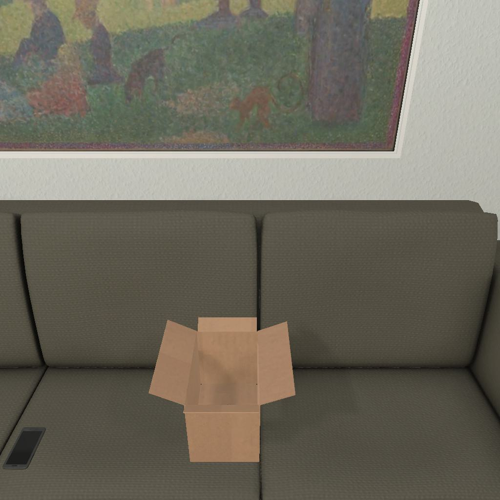
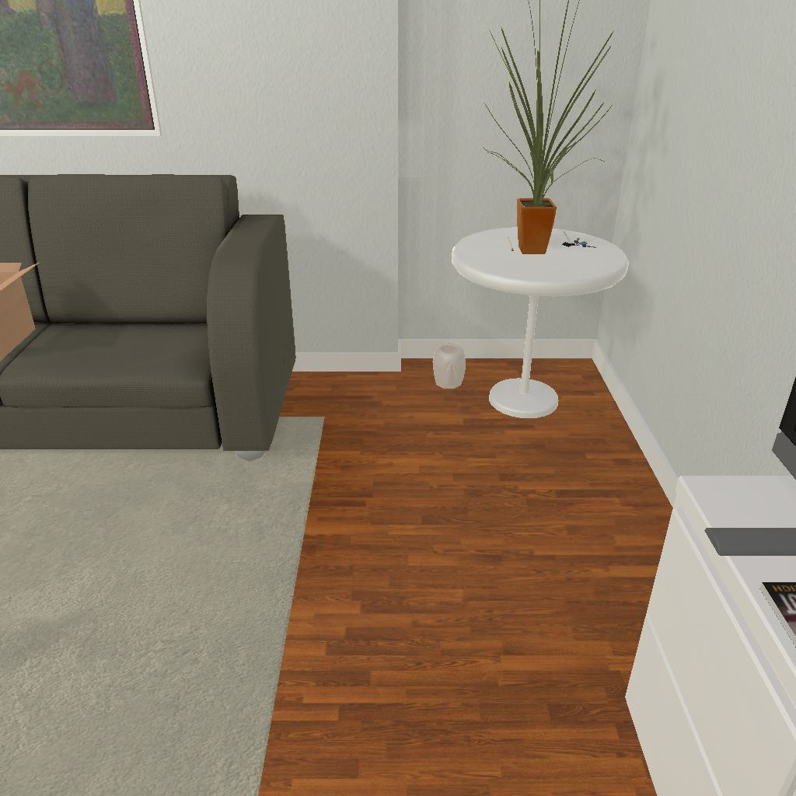

---------------------------------------------------------task: 5---------------------------------------------------------
--------------------------------------------------------------------------------------------------------------------------------------------------------------------
--------------------------------------------------------------------------------------------------------------------------------------------------------------------
Step:--------------------------------------------------------------------------1-------------------------------------------------------------------------------
----------------------------------------
VLM Prompt:
Image1:
Image2:
**Instruction**
1. Analyze the provided images to identify all visible household objects and compare the difference between images (e.h. whether the object is opened or not and taken on hand or not), focusing on those relevant to the task description "put a book in armchair."
2. Use the analysis of images and the task hint "The agent must find an object of the desired type, pick it up, find the correct location to place it, and put it down there." to answer the question: what is the most reasonable action in the choices for the task description "put a book in armchair"?
3. Decide and write the answer using the template: The answer is: (i): , where i is the real number. If there is no desired object in images, search every place based on **Initial Observation** to find the object. And if no one is exactly correct, choose a similar answer.
**Initial Observation**
You are in the middle of a room. Looking quickly around you, you can see armchair (1), sofa (1), coffeetable (1), drawer (1-4), sidetable (1-3), dresser (1)
**Answer Choices**
(1): go to armchair 1
(2): go to sofa 1
(3): go to coffeetable 1
(4): go to sidetable 1
(5): go to dresser 1
(6): go to drawer 2
(7): go to drawer 3
(8): go to drawer 4
(9): go to sidetable 2
(10): go to sidetable 3
(11): open drawer 1
(12): close drawer 1
(13): examine drawer 1
**Answer**
Let's think step by step by following the instructions.
----------------------------------------
----------------------------------------
Original Response:
Image1 Analysis:
- There's a sofa with a cardboard box and a mobile phone on it.
- A painting is hanging on the wall above the sofa.
- No books are visible on the sofa.
Image2 Analysis:
- There's a side table with a plant on it and two cups on the floor beside it.
- No books are visible on or near the side table.
Task Description Analysis:
- The task is to put a book in the armchair.
- No book is visible in the provided images, so the agent needs to find a book.
Based on Initial Observation:
- The agent is in the middle of a room with various furniture items including an armchair, sofa, coffee table, side tables, dresser, and drawers.
Reasonable Action Analysis:
- To complete the task, the agent must find a book.
- The book is not visible in the provided images, so the agent should search places where a book might be found.
- Generally, books might be found in drawers or dressers.
The answer is: (11): open drawer 1
----------------------------------------
----------------------------------------
>>> Refine Original VLM Response and Get Pure Action: open drawer 1
----------------------------------------
-----------------------------------------------------------------
Running time: 14.907463073730469 seconds
Total Money: 1.94361
-----------------------------------------------------------------
-----------------------------------------------------------------
Text Observation:You open the drawer 1. The drawer 1 is open. In it, you see a houseplant 1, a television 1, a box 1, a book 1, a wateringcan 1, a keychain 1, a pencil 1, and a pencil 2.
-----------------------------------------------------------------
UNSUCCEED